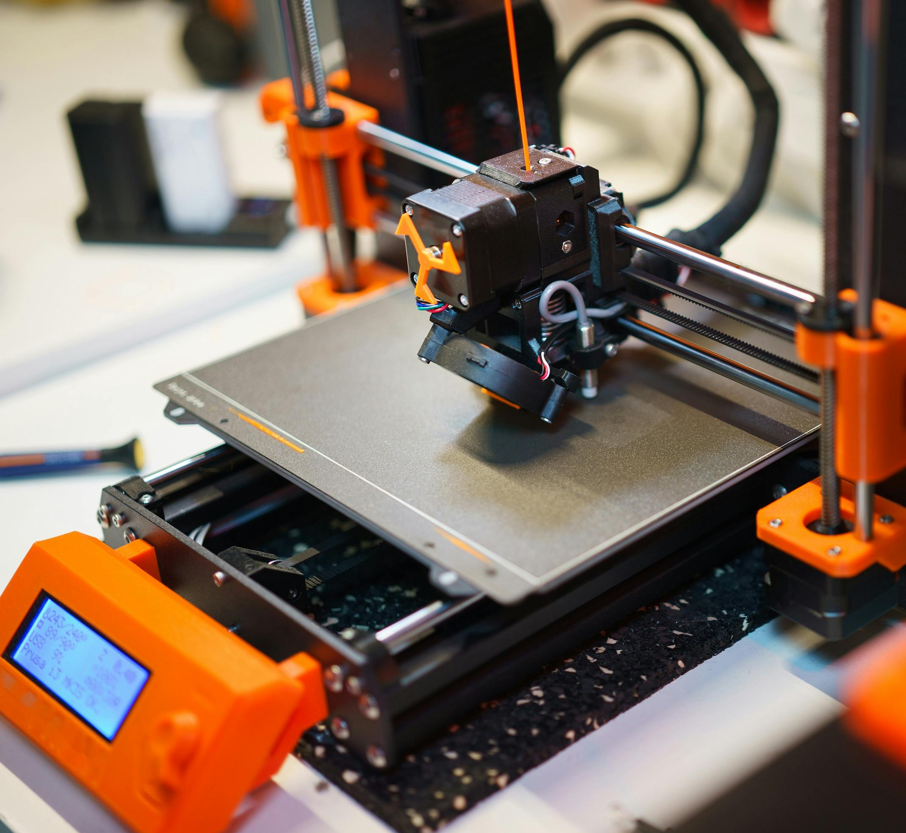
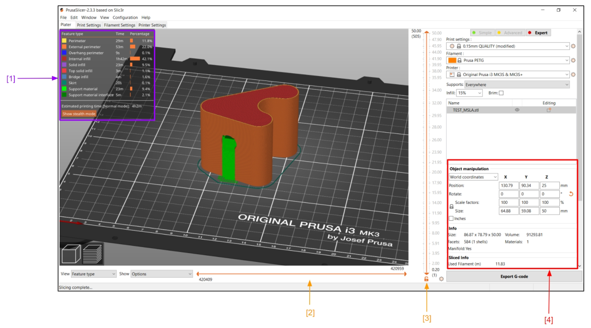
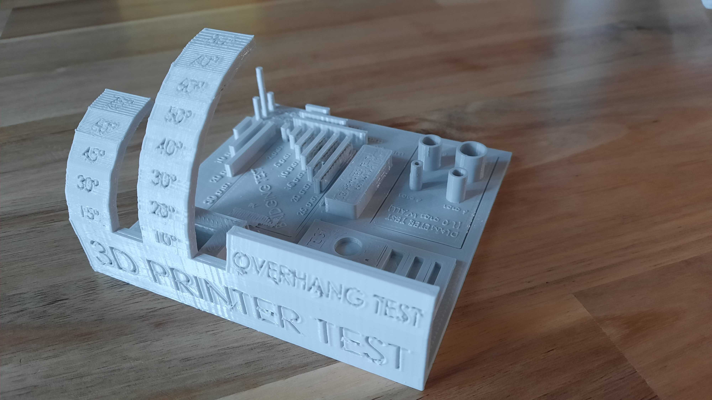
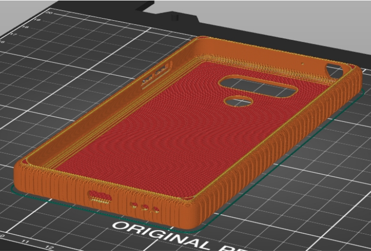
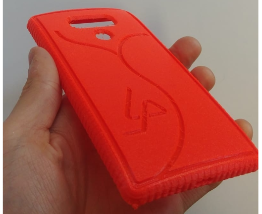
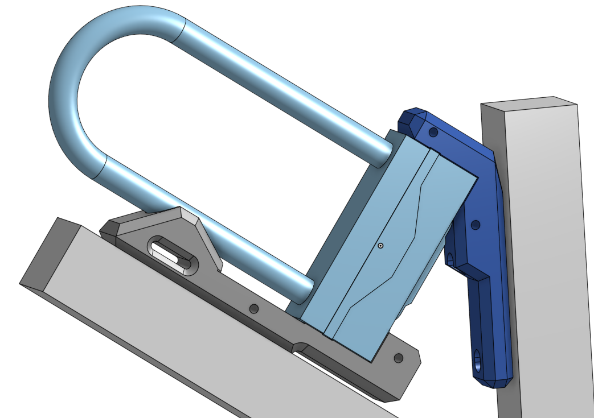
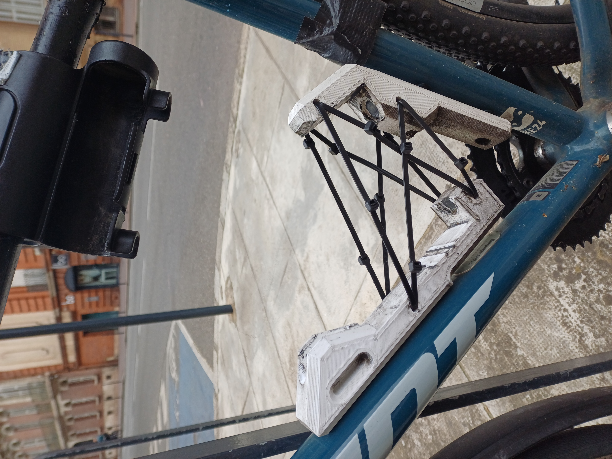
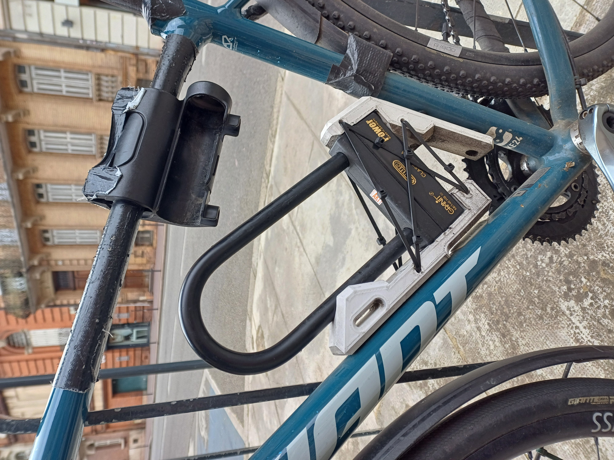
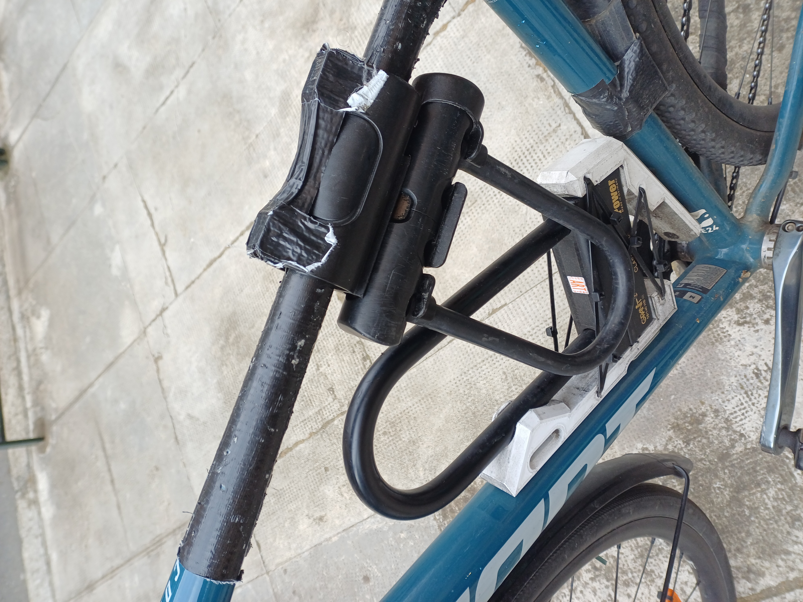

3D Printed Projects
Exploring the real capabilities and challenges of domestic FDM 3D printing — from academic analysis to long-lasting functional parts.

Prusa MK3s — main printer used during the course.

Modern desktop FDM printers (Bambu Lab example).
Introduction to Additive Manufacturing
During my studies at EPFL, I followed the course "Introduction to Additive Manufacturing". The course provided both theoretical foundations and extensive hands-on experience with consumer FDM printers, primarily the Prusa MK3s.
While 3D printing is often marketed as simple, we quickly realized it comes with many challenges not found in traditional 2D printing: material shrinkage, thermal warping, bed adhesion issues, dimensional accuracy, layer bonding quality, and anisotropic mechanical properties. These theory-vs-practice differences are central to mastering additive manufacturing.
To put theory into practice, we designed and printed a custom phone case, following the complete workflow: CAD modeling → slicing with optimized settings → actual printing.

Slicer interface showing detailed print settings (layer height, infill, temperatures, speeds…).

Calibration print used to verify dimensional accuracy and print quality. More calibration tests can be found here.

Slicer interface view of the phone case.

Final printed phone case showing typical FDM issues: warping at corners and bed adhesion problems.
All observations, including detailed analysis of these challenges and the lessons learned, are documented in our course report.
Real-World Application: Bike U-Lock Holder
Building on the skills gained, I designed and 3D printed a custom U-lock holder for my bicycle. After two years of daily use — carrying a heavy 2 kg Abus Granit Power U-lock on sunny, rainy, hot and cold days, with vibrations, and regular commuting — the part remains in excellent condition with no cracks or deformation; showing how proper slicer settings and print orientation can greatly increase the strength and durability of even basic 3D prints.

Onshape CAD model of the custom U-lock holder designed to fit inside the bike frame.
Project Motivation
I needed a reliable solution to keep both U-locks on the bike at all times. The holder had to be:
- Sturdy and vibration-resistant (minimal wiggling while riding)
- Easy to use — locks should slide in and out smoothly
- Quick to design and efficient to print
I mounted the holder inside the frame triangle using the existing bottle cage mounts. Instead of rigid side walls, I used zip ties. This clever solution allows adjustable tension: firm enough to prevent movement, yet flexible enough for easy insertion/removal of the locks.

Printed holder mounted on the bike.

With one U-lock installed.

Fully loaded with both locks.
This fully custom design perfectly fits my bike geometry and usage habits — something universal commercial solutions often fail to achieve.
Material: PLA • Printed on Prusa MK3s • Still performing perfectly after 2+ years of real-world use.